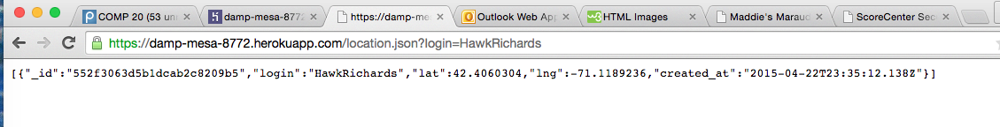
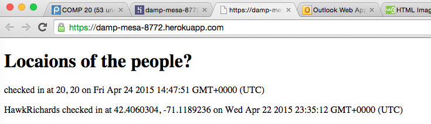
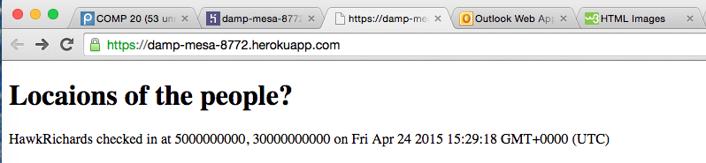

- Location: when the GET method is called
- Severity of Issue: HIGH because there would be no functionality if a user entered a malicious script using curl
- Description of Issue: The issue with Feiyu's code is that I can curl data to his server without any barriers. I was able to break his code by inserting a script that executed an alert when the page is loaded.
- Proof of Vulnerability:


- Resolution: one could either parse the input or parse the output (when information is being retrieved from the database); however, it is much safer to parse the input when it is entered. One way to do this is to substitute the script tags for the ampersand characters (with lt and gt).
- Location: '/location.json'
- Severity of Issue: MEDIUM because although having access to the database may not necessarily "break" the server, it is a huge security threat in general for anyone to have access to other people's information.
- Description of Issue: Feiyu does not have any sort of authentication for his server. Any person can have access to the data of a given person using /location.json?login=username.
- Proof of Vulnerability:
I was able to look up the location of HawkRichards without any sort of barrier.
- Resolution: for assignment 3, we could fix this issue by creating some sort of login page. That way only a user who should have access to the database will have access to the database.
- Location: '/sendLocation'
- Severity of Issue: HIGH because any person can overwrite or add information to the database.
- Description of Issue: I was able to curl false latitude and longitude values into the database for HawkRichards. Therefore, if someone knows a login then they can provide false information using curl. They could also add people that are not actually in the database and provide false information for them as well.
- Proof of Vulnerability:

- Resolution: A login page could work for this. However, this would not necessarily keep someone from tampering with the information. The most important way to prevent this issue is to make sure that people cannot alter information in the database.